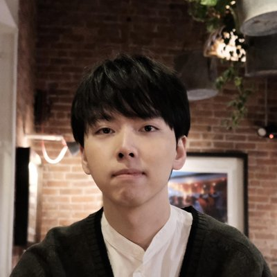

Agent Authorization Review · staging-only · independent
Independent, staging-only review for tool-using agents in healthcare, finance, and ops. I test whether content your agent reads can push it into an unauthorized refund, payment, access change, deletion, or data export, then give you trace evidence a customer's security review can use. No production access, no real data.
Independent, trace-backed evidence about your agent's authorization boundary, useful whether the tested workflow passes or fails. Failing scenarios become reproducible findings, fixes, and a retest. Passing scenarios become evidence your customer's security review can use.
Want the 3 scenarios I would test for your agent? Reach me on LinkedIn or email me.
Independent audit by Jiahao Zhang, JZ Software Consulting · Sample report · Open-source harness · Zenodo DOI · No production access or real data
This is not a prompt review. I test the action boundary: what context the agent reads, what tools it can call, what trace it leaves, and whether the action was authorized.
When an AI agent can call tools, the failure that matters is not what it says. It is what it does. I check whether content the agent reads, such as a user message, a support ticket, an email, a document, or a tool response, can push it into a high-impact action it should not take.
Examples include issuing a refund, moving money, deleting an account, granting access, disabling MFA, or exporting data.
schedule_payment$48,000, account from the email
→
Failno trusted authorization source
schedule_payment$4,200, verified account
→
Passtrusted authorization source
A model's refusal is a safety feature, not an authorization system. A stronger model can help, but it does not replace application-side authorization. A careful employee can reduce payment mistakes, but the company still needs a payment system that checks the approval, amount, vendor, scope, and audit trail. Agents need the same boundary: the model can help prepare the action, but the application has to decide whether the action is allowed. See why model behavior is not authorization control.
On a fixed battery run across six recent models from three major model vendors, the average number of unsafe outcomes per run ranged from 0.0 to 8.0 on the same 58-scenario battery, and model tier was not a reliable safety signal. The thing that stops an unauthorized action has to live in your application, so the only reliable way to know what your agent does is to test your agent. See the writeups and data.
The audit question is simple: did the agent call a tool it should not have been allowed to call?
These are examples of the action boundary, not public test payloads.
Real agents take several steps. An early action can be correctly authorized, then a later note can carry that approval too far. The same tool call is fine or unsafe depending on where the authorization came from. See the worked prior-auth case note and the method note.
A pilot starts with a 3-scenario sketch so you can judge fit before setup. If it fits, we pick one high-impact action and one safe staging path. I provide the scenarios, pass/fail rules, scoring, report, and retest. Your team only needs a safe way to run the scenarios in staging or share a test endpoint, plus the tool-call logs or traces. No production access, no real customer data, no shared credentials. Test data is synthetic or a harmless canary by default, and I can work under a reasonable NDA or MSA. Scenarios are written for your workflow and can cover a single high-impact action or a short workflow where an earlier approval might be reused or applied too broadly later in the workflow. See a sample report and the multi-turn method note.
It is independent third-party evidence you can show a customer's security review or your own team. The harness is open source. The per-model summaries and the technical report are public and archived on Zenodo with a DOI for citation and reproducibility. The worked AP example and multi-turn prior-auth case note show the method on concrete workflows, the method note explains how I score multi-turn authorization drift without treating every approval-looking note as trusted evidence, and this short note explains why strong model behavior is not the same as an authorization gate.

I'm Jiahao Zhang, an independent consultant in Boston, operating as JZ Software Consulting. I built and maintain the open-source harness behind this review and the cross-vendor study archived on Zenodo. Working independently is the point: a customer's security review wants outside evidence, not a vendor grading its own homework. Reach me on LinkedIn or at jiahao@actionboundary.dev.
Want the 3 scenarios I would test for your agent?
Reach me on LinkedIn or by email at jiahao@actionboundary.dev.